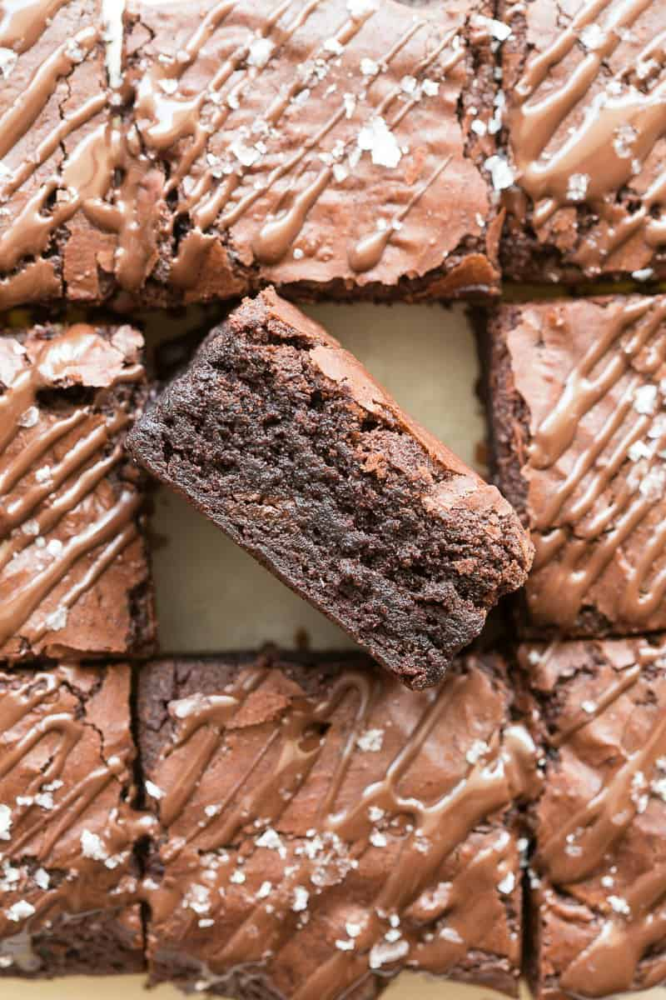

Gym-Bro Brownie

These protein brownies are super fudgy, gooey, and need just four ingredients to make! No flour, no eggs, and no butter needed, I love how they are a guilt-free dessert fix.
Ingridients:
- Bananas
- Cocoa powder
- Almond butter
- Protein powder
Step-By-Step
- Start by adding all your ingredients into a high-speed blender or food processor. Blend the ingredients together until fully combined. If desired, add some chocolate chips. You can also mix by hand in a large mixing bowl.
- Then, transfer the batter into a lined pan and bake for 15-20 minutes, or until a skewer comes out ‘just’ clean. While the brownies are hot in the pan, lightly press your hand over the top to form unnatural cracky tops.
- Allow the brownies to cool in the pan completely before drizzling with chocolate and slicing them up.